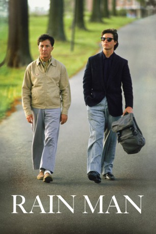

#226 Rain Man
Auszeichnungen: 4 Oscars gewonnen für 4 Oscars nominiert 2 GoldenGlobes gewonnen
 
 IMDB-Wertung: 8.0 / 10
IMDB-Wertung: 8.0 / 10  Metascore: 65
Metascore: 65 
Charlie Babbitt ist ein oberflächlicher, karrierefixierter Egoist. Als sein Vater, zu dem er jahrelang keinen Kontakt hatte, eines Tages stirbt, erfährt er, dass er einen älteren Bruder namens Ray hat, der drei Millionen Dollar erben soll, während Charlie lediglich des Vaters Rosen sowie einen 49er Buick abbekommt. Aber Charlie wittert eine Chance. Denn Ray lebt in einem Heim für psychisch Kranke und leidet an Autismus. Er steht unter der Obhut von Dr. Bruner, einem alten Freund des Vaters, der das Vermögen Rays nun treuhänderisch verwalten soll und der Charlie nie über Ray informieren wollte. Charlie spekuliert: Wenn er Ray mitnimmt und Bruner unter Druck setzt, notfalls auch klagt, hätte er Chancen auf die Hälfte des Sümmchens - sofern er die Vormundschaft über seinen Bruder bekommen würde, vielleicht auf das ganz Geld. Eine Reise beginnt, bei der sich die beiden unterschiedlichen Brüder Stück für Stück näher kommen...
Jahr: 1988
Dauer: 133 Minuten
FSK: 12
Land: USA Studio: United ArtistsTonspuren: DTS - ,
Untertitel:
Auflösung: 1080p (1920×1040) Größe: 11673 MB
Genre: Drama
Regisseur:  Barry Levinson
Barry Levinson
Drehbuch: Barry Morrow, Ronald Bass, Barry Morrow
Soundtrack: Hans Zimmer
Darsteller:
 Dustin Hoffman als Raymond Babbitt
Dustin Hoffman als Raymond Babbitt Tom Cruise als Charlie Babbitt
Tom Cruise als Charlie Babbitt Valeria Golino als Susanna
Valeria Golino als Susanna Gerald R. Molen als Dr. Bruner
Gerald R. Molen als Dr. Bruner Michael D. Roberts als Vern
Michael D. Roberts als Vern Ralph Seymour als Lenny
Ralph Seymour als Lenny Lucinda Jenney als Iris
Lucinda Jenney als Iris Bonnie Hunt als Sally Dibbs
Bonnie Hunt als Sally Dibbs Kim Robillard als Small Town Doctor
Kim Robillard als Small Town Doctor Beth Grant als Mother at Farm House
Beth Grant als Mother at Farm House Ray Baker als Mr. Kelso
Ray Baker als Mr. Kelso Jake Hoffman als Boy at Pancake Counter
Jake Hoffman als Boy at Pancake Counter Royce D. Applegate als
Royce D. Applegate als  June Christopher als
June Christopher als - Anna Mathias als
 Archie Hahn als
Archie Hahn als  Chris Mulkey als
Chris Mulkey als  Reni Santoni als
Reni Santoni als - Bridget Sienna als
- Jonathan Stark als
 Lynne Marie Stewart als
Lynne Marie Stewart als  Barry Levinson als Doctor , uncredited
Barry Levinson als Doctor , uncredited Mark Winn als Restaurant Patron , uncredited
Mark Winn als Restaurant Patron , uncredited- Jack Murdock als John Mooney
- Dolan Dougherty als Farm House Kid
- Marshall Dougherty als Farm House Kid
- Patrick Dougherty als Farm House Kid
- John-Michael Dougherty als Farm House Kid
- Peter Dougherty als Farm House Kid
- Andrew Dougherty als Farm House Kid
- Loretta Wendt Jolivette als Dr. Bruner's Secretary
- Donald E. Jones als Minister at Funeral
- Byron P. Cavnar als Man in Waiting Room
- Donna J. Dickson als Nurse
- Earl Roat als Man on Wallbrook Road
- William Montgomery Jr. als Wallbrook Patient Entering TV Room
- Elizabeth Lower als Bank Officer
 Michael C. Hall als Police Officer at Accident
Michael C. Hall als Police Officer at Accident- Robert W. Heckel als Police Officer at Accident
- W. Todd Kenner als Police Officer at Accident
- Kneeles Reeves als Amarillo Hotel Owner
- Jack W. Cope als Irate Driver
- Nick Mazzola als Blackjack Dealer
- Ralph Tabakin als Shift Boss
- Isadore Figler als Pit Boss
- Ralph M. Cardinale als Pit Boss
- Sam Roth als Floorman
- Nanci M. Harvey als Lady at Blackjack Table
- Kenneth E. Lowden als Guard in Video Room
- Jocko Marcellino als Las Vegas Crooner
Datei: X:\1988\Rain Man (1988, FSK12, 1920x1040).mkv seit 14.02.2015
Festplatte: HD 1987-1991
 Es gibt insgesamt 66 Filme in der Gruppe '1988'
Es gibt insgesamt 66 Filme in der Gruppe '1988'